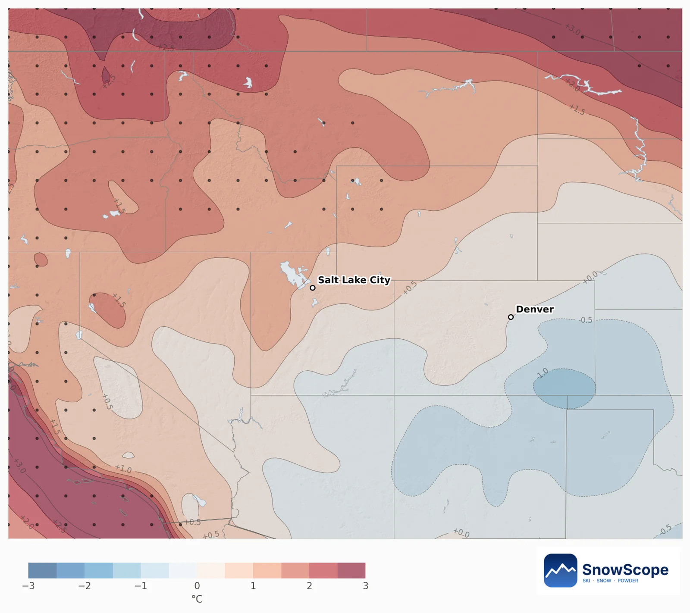
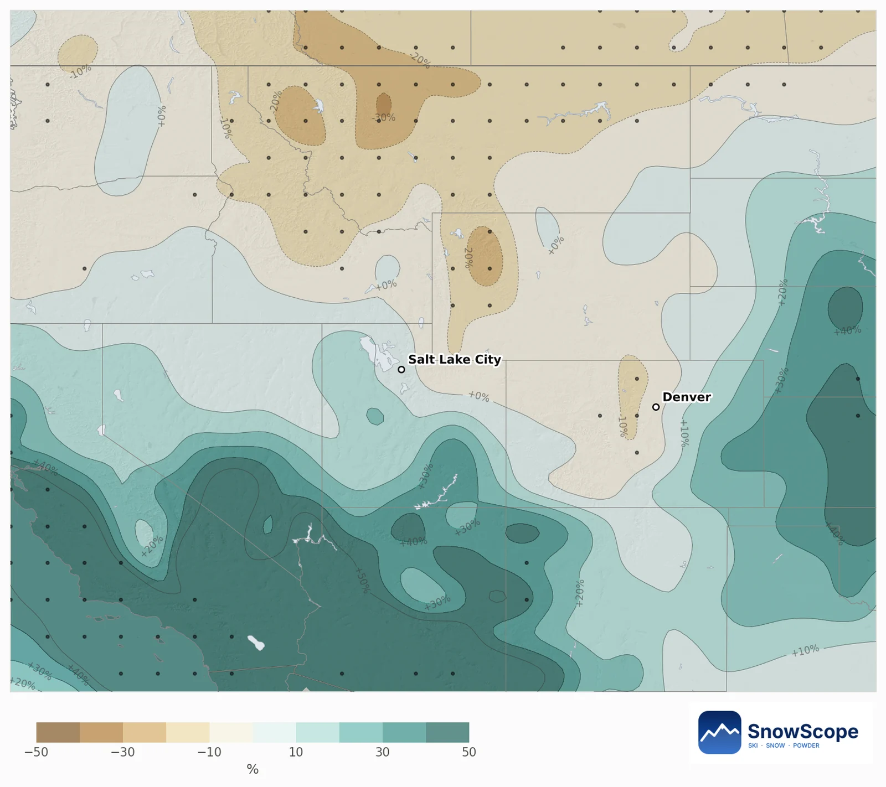

جبال الروكي فدجنبر 2026: التلج قل فالشمال، وما كاينش إشارة لكولورادو ويوتا
التوقع الموسمي كيعطي للروكي دجنبر سخون شوية كثر والشتا قريبة من العادي. جبل بجبل، معناه ما كاينش إشارة واضحة لأغلب كولورادو ويوتا، وحظوظ قل فمونتانا ووايومنغ.
شوف توقعات التلج مباشرة ديال Rocky Mountains فالتطبيق ديال SnowScopeالعلو ديال التلج، التنبيهات والخريطة 3D، فابور.
الشمال فيه التلج قل، والجنوب ما تقرر والو
الخريطة ديالنا كتقارن كل منطقة ديال الجبل ديال تقريبا 10 كيلومتر مع الدجنبرات ديالها اللي فاتو. ف 79% ديال الجبل ديال الروكي ما كاينش إشارة واضحة. 19% مايلة لتلج قل، غالبا فالشمال حدا Big Sky والهضبة ديال Yellowstone والجبال حدا Jackson. غير 1% مايلة لتلج كثر، فشي جبال فجنوب يوتا.
الحظ باش يكون تلج جديد كثر من دجنبر عادي كيتراوح بين 27% و62%، والقيمة الوسطى 45%.
شنو كيقول التوقع الأوروبي
51 حساب ديال النظام الموسمي ديال المركز الأوروبي كيخليو دجنبر سخون ب 0.9 درجة كثر من العادة فالمتوسط، و71% من الحسابات سخونين. الشتا قريبة من العادي: 3% تحت دجنبر عادي فيه 40 ملم، والحسابات مقسومين، 45% فيهم الشتا كثر.
السخونية كتزيد جيهة الشمال: تقريبا 1.7 درجة فالروكي الشمالية، فين 82% من الحسابات سخونين وغير 33% فيهم الشتا كثر. فكولورادو الإشارة ضعيفة، 0.3 درجة، وفيوتا 1.0 درجة.


كولورادو، يوتا، الروكي الشمالية
كولورادو (Breckenridge، Vail، Winter Park، Beaver Creek، Steamboat، Copper): دجنبر عادي كيجيب 51 سنتيمتر ديال التلج الجديد فالوسط؛ التوقع 46 سنتيمتر، والحظ باش يكون كثر من العادة 42%. التلج فالأرض نهار 31 دجنبر: العادي 84 سنتيمتر، التوقع 80 سنتيمتر. الدجنبرات اللي كيشبهو: 1995 و1985 و2003.
Wasatch فيوتا (Park City، Deer Valley، Snowbird، Alta، Solitude): العادي 71 سنتيمتر، التوقع 70 سنتيمتر، الحظ 47%؛ نهار 31 دجنبر 103 سنتيمتر، العادي والتوقع بحال بحال. الروكي الشمالية (Big Sky، Jackson Hole، Whitefish، Sun Valley، Bridger Bowl): العادي 65 سنتيمتر، التوقع 60 سنتيمتر، الحظ غير 37%؛ نهار 31 دجنبر 102 سنتيمتر، العادي والتوقع بحال بحال.
شنو تدير بهادشي
لكولورادو ويوتا، دجنبر باقي مفتوح: خطط بحال شي عام عادي. فمونتانا ووايومنغ الحظوظ مايلة شوية لتلج قل، داكشي علاش الجهات العالية والشمالية هي الاختيار الأضمن فبداية الشهر.
التوقع ديال شهر ما كيشوفش العواصف وحدة بوحدة. عاصفة كبيرة وحدة جاية من المحيط الهادي تقدر تعمر الشهر، داكشي علاش تبع التوقع ديال 7 أيام قبل ما تسافر.
نصايح للي كيتزلجو
- كولورادو ويوتا: دابا ما كاين علاش تبدل البرنامج ديال دجنبر.
- مونتانا ووايومنغ: فبداية دجنبر ختار الجهات العالية.
- شوف الخريطة ديال SnowScope سيمانة قبل ما تمشي: كتبين العاصفة الجاية وحد التلج حسب العلو.
المراجع والمصادر
- ECMWF SEAS5 seasonal forecasts, Copernicus Climate Change Service (C3S) cds.climate.copernicus.eu/datasets/seasonal-postprocessed-single-levels
- ERA5 monthly averaged data, Copernicus Climate Change Service (C3S) cds.climate.copernicus.eu/datasets/reanalysis-era5-single-levels-monthly-means
على هاد الأرقام
الطريقة. الحرارة والشتا: التوقع الموسمي ديال المركز الأوروبي ديال الطقس (ECMWF SEAS5، 51 حساب بداو نهار 1 نونبر 2026، مقارنة مع 1993-2016، شبكة ديال تقريبا 100 كيلومتر). التلج: لكل خانة ديال الجبل ديال تقريبا 10 كيلومتر كناخدو الموديل ديالنا ديال اللي فات (46 شتوة، العلو ديال التلج مصحح بالعلو) والطقس ديال كل دجنبر من 1981 حتى ل 2025 (ERA5)؛ الدجنبرات اللي كيشبهو لكل حساب كيحسبو كثر، والتلج ديالهم كيعطي الحظوظ. التلج ديال اليوم: الخريطة ديال SnowScope (500 متر). التوقع ديال شهر كيبدل غير الحظوظ: ما كيقدرش يتوقع عاصفة ولا تاريخ.
كيفاش تستاشهد بهاد المقال
للبحث، التعليم ولا الصحافة: الأرقام والرسومات تقدر تعاود تخدم بيهم بحرية تحت CC BY 4.0 مع هاد الاستشهاد.
SnowScope (2026), جبال الروكي فدجنبر 2026: التلج قل فالشمال، وما كاينش إشارة لكولورادو ويوتا, https://snowscope.app/blog/ar/2026/11/rocky-mountains-december-2026-snow-outlook.html, تشاف ف 2026-11-10
SnowScope (Atlas Labs). (2026, November 10). جبال الروكي فدجنبر 2026: التلج قل فالشمال، وما كاينش إشارة لكولورادو ويوتا. SnowScope snow reports. https://snowscope.app/blog/ar/2026/11/rocky-mountains-december-2026-snow-outlook.html
BibTeX
@misc{snowscope2026rockymountainsdecember20,
author = {{SnowScope (Atlas Labs)}},
title = {جبال الروكي فدجنبر 2026: التلج قل فالشمال، وما كاينش إشارة لكولورادو ويوتا},
year = {2026},
month = nov,
howpublished = {\url{https://snowscope.app/blog/ar/2026/11/rocky-mountains-december-2026-snow-outlook.html}},
note = {Published 2026-11-10 09:32 UTC; accessed 2026-11-10}
}· CC BY 4.0 · الطريقة، الداتا والأدوات →
تقارير أخرى ديال التلج

خطط ل Mammoth Mountain حسب الموسم: تقريبا 93 in (235 cm) فالقمة العادية فالوسط ف 46 شتوة اللي فاتو، مارس أكثر شهر، ربيع طويل وشتوات كتبدل.

الخرافات على Jackson Hole مقارنة مع الحقائق والتاريخ ديالنا: تقريبا 80 in (204 cm) فالقمة العادية فالوسط ف 46 شتوة اللي فاتو، بلا نقصة واضحة.

الوصول ل Telluride فالشتا، مطار بمطار: Telluride Regional، Montrose، الطريق 145 مع القانون ديال الجر ديال Colorado، والتيليكابين فابور حتى ل Mountain Village.